Chennai city Intro
Chennai, the vibrant capital of Tamil Nadu, offers a rich tapestry of IT hubs, educational institutions, tourist spots, cinema landmarks, sports venues, and shopping districts, making it an ideal subject for a content-oriented website. Chennai is a dynamic city renowned for its IT prowess, educational hubs, tourism gems, cinema legacy, sports fervor, and shopping delights, perfect for a content-rich website. Each category below features subtopics with key details and famous places to engage visitors. Chennai, the bustling capital of Tamil Nadu, blends tradition with modernity as India's health, education, and IT hub. City Overview Known as the "Detroit of India" for its auto industry and "SaaS capital" for tech startups, Chennai spans 426 sq km with a population over 12 million. Its coastline along the Bay of Bengal features iconic Marina Beach, while colonial-era Fort St. George marks its 1639 origins as Madras. Cultural Heart Deeply rooted in Tamil heritage, Chennai thrives on Carnatic music, Bharatanatyam dance, and Kollywood cinema from studios like AVM. Festivals like Pongal and Mylapore's Brahmotsavam draw millions, showcasing Dravidian temples like Kapaleeshwarar. Economic Powerhouse Chennai drives India's economy with IT corridors like OMR, auto giants in Sriperumbudur, and ports handling massive cargo. It hosts IIT Madras, global firms like TCS, and medical tourism at Apollo Hospitals. Lifestyle & Climate Affectionately called the "Land of Smiles," locals savor filter coffee, idli-sambar, and beachside sundal. Tropical weather means hot summers and monsoons, but vibrant neighborhoods like T. Nagar pulse with shopping and street life.
IT Sector
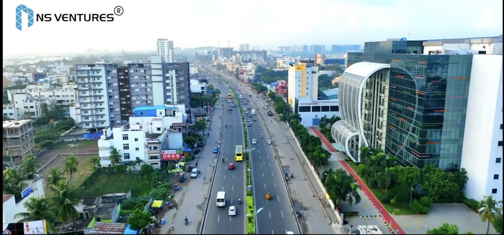
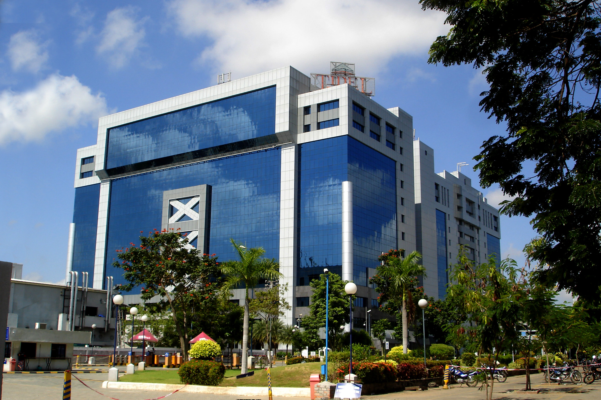

Major Hubs Chennai's IT landscape thrives along OMR (Old Mahabalipuram Road), dubbed the Electronics Corridor, and Tidel Park in Taramani, Asia's largest IT park hosting thousands of professionals. Key Companies Global giants like TCS, Infosys, Cognizant, and Accenture dominate Siruseri IT Park and Guindy Techno Park, driving India's SaaS revolution with over 5,000 startups. Emerging Tech Zones ELCOT SEZ in Sholinganallur focuses on AI and fintech, while Adyar's startup ecosystem fosters innovation through incubators.
Education
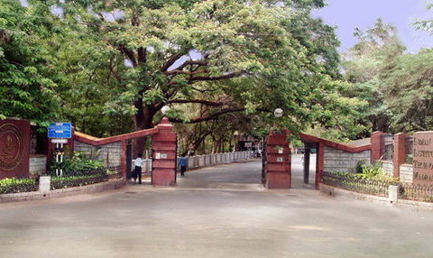

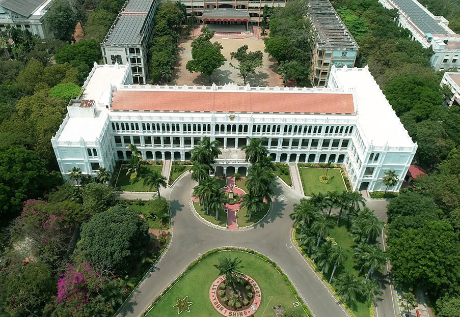
Home to world-class institutions, Chennai excels in engineering and research. IIT Madras in Adyar is globally renowned for tech innovation, featuring advanced facilities like open-air theaters. Other highlights include Anna University in Guindy for engineering excellence and Loyola College in Nungambakkam, a top arts and science hub.
Tourism
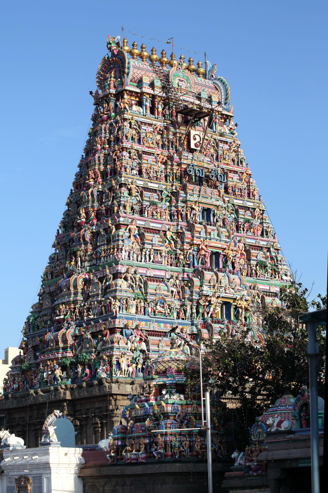
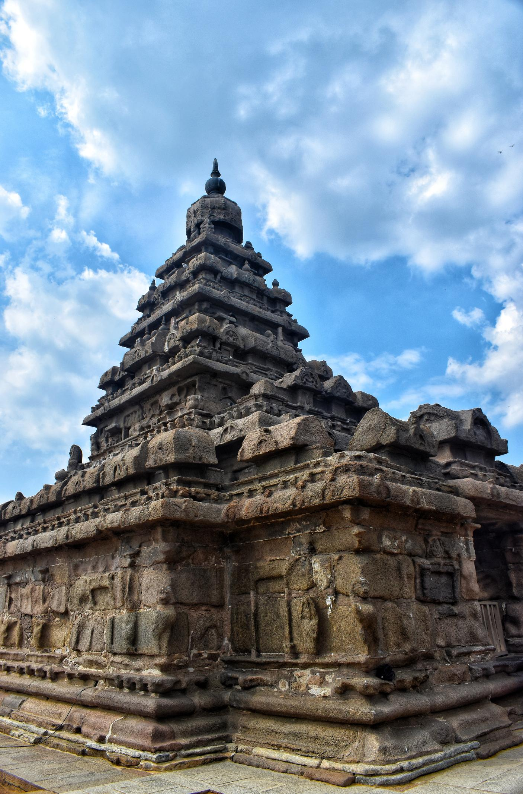
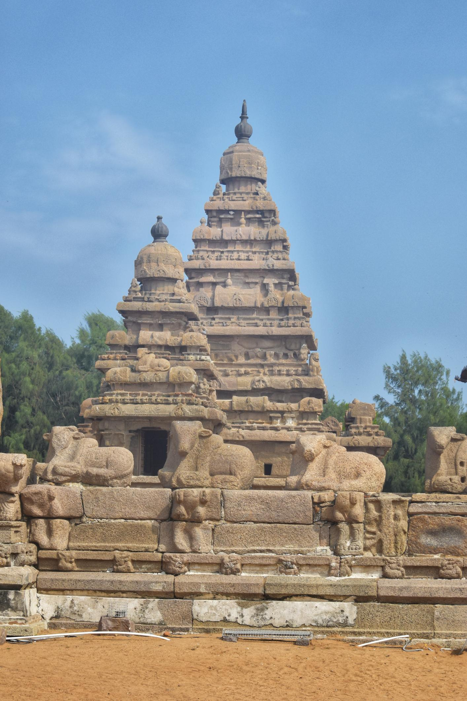
Chennai blends beaches, history, and culture. Marina Beach, the world's second-longest urban beach, draws crowds for sunrise walks and street food. Must-visits include Kapaleeshwarar Temple in Mylapore for Dravidian architecture, Fort St. George for colonial history, and DakshinaChitra for living heritage displays.
Cinema
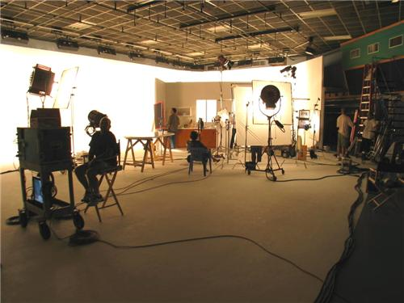
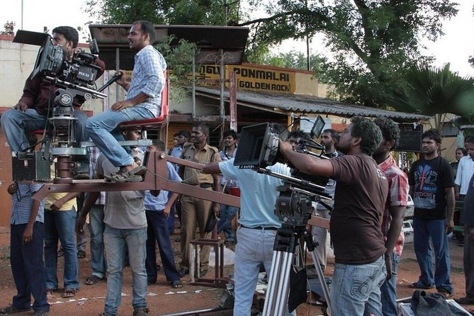
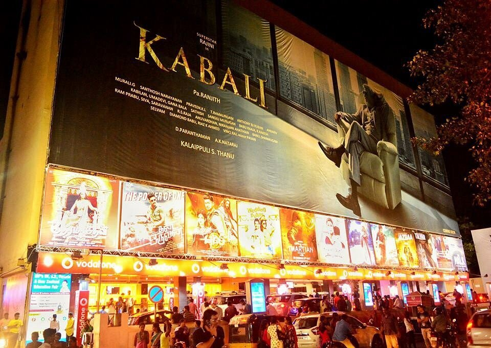
As Kollywood's heart, Chennai produces Tamil cinema blockbusters. MGR Film City in Thuraipakkam spans 70 acres with film sets mimicking villages and temples. Valluvar Kottam honors the Tamil poet Thiruvalluvar, while iconic theaters like Rohini and multiplexes in Express Avenue host premieres.
Sports


Cricket dominates, with MA Chidambaram Stadium (Chepauk) hosting IPL's CSK and international matches. Jawaharlal Nehru Stadium in Chennai supports athletics and football, while SDAT Multi-Purpose Stadium adds to the sports scene.
Shopping
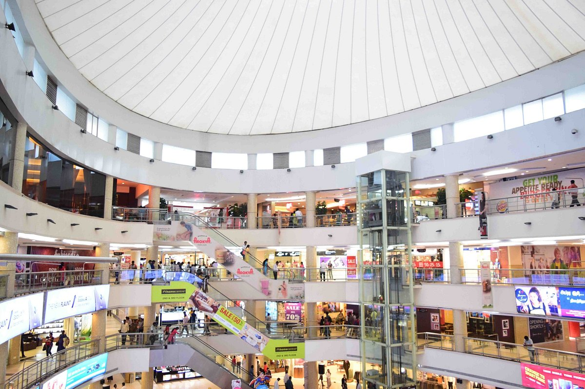

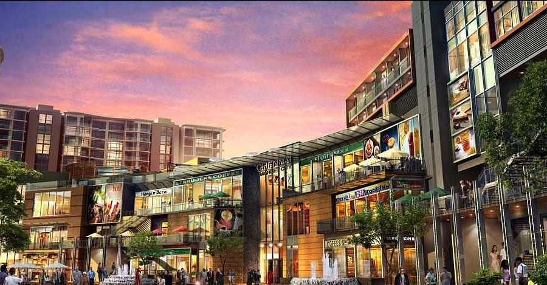
T. Nagar buzzes with sarees, jewelry, and street eats like sundal. Express Avenue Mall offers luxury brands and entertainment, Phoenix Marketcity provides high-end retail, and Pondy Bazaar in Parrys Corner excels in bargains. Anna Nagar and Nungambakkam rank among India's priciest retail zones.